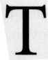

 he earth is tilted on its axis in relation to the Sun. The earth's equator makes a 23.5° angle with the Sun's path, the ecliptic. Astronomers call this tilt the "obliquity of the ecliptic" because the equator and the ecliptic form an oblique angle with one another. The effect of having an oblique ecliptic is that, depending on the time of year, some signs rise more quickly than others over the horizon.
In the northern hemisphere, the signs of short ascension begin at the winter solstice and continue through the winter and spring months. These are Capricorn, Aquarius, Pisces, Aries, Taurus, and Gemini. In horoscopes of the northern hemisphere, the signs of short ascension are often intercepted, that is, contained wholly within a house so that they do not rule house cusps. The situation is the reverse in the southern hemisphere.
The signs of long ascension (northern hemisphere) begin at the summer solstice (00 Cancer) and continue through the summer and autumn. These are Cancer, Leo, Virgo, Libra, Scorpio, and Sagittarius. They take longer to rise over the horizon and may occupy two house cusps in the northern hemisphere. The opposite holds true south of the equator. The ancients called the signs that took longer to rise the "straight signs," and the signs that rose more quickly than average the "crooked signs." The idea behind these designations is that straight signs have been stretched out as you might stretch fabric to get out the wrinkles. Crooked signs have been squeezed together, crumpled, or "scrunched" (as my kids would say) to make them fit into a smaller space.
One might call this ancient theory of straight and crooked (or stretched and crumpled) signs the "rubber band" theory of the ecliptic. Using their rubbery ecliptic, these early astrologers argued that, during long ascension, squares (90°) got stretched into trines (120°), and conversely, during short ascension, trines got squeezed into squares. Ptolemy repeated this idea in the Tetrabiblos when he wrote, "And sometimes, also, among the signs that ascend slowly the sextile aspect destroys, when it is afflicted, and again among the signs that ascend rapidly the trine." Ptolemy is saying that sextiles can be stretched into squares, and trines can be compressed into squares.
The first century horary astrologer Dorotheus used the concepts of straight and crooked to interpret his charts. He said that if the Ascendant sign is "...one of the straight in rising, then this action will be difficult and slow, in which there will be misery and misfortune and trouble," but "... if the ascendant is one of the crooked signs and any one of the benefics is in it or any of them aspects the ascendant, it will remove the burden and help bring this action to a successful conclusion." It takes longer to get through a sign that's been stretched out than a sign that's been scrunched into a small space. William Lilly accepted this theory of the rubbery ecliptic with its stretchable aspects and used it in his horary analyses.
THE METHOD OF WILLIAM LILLY
The essence of Lilly's method is the effort to answer the question "Whether the thing demanded will come to pass, yea or near' Lilly devotes a chapter of his Christian Astrology to the techniques that allow the astrologer "to know whether a thing demanded will be brought to perfection, yea or near" First, Lilly assigns planets as significators of the querent and the quesited. "The querent is he or she that propounds the question and desires resolution; the quesited is he or she, or the thing sought and inquired after. The significator is no more than the planet which rules the house that signifies the person or thing demanded." All of this should sound familiar by now.
The ascending sign and its ruler always signify the person who asks the question. The Moon and any planets in the 1st house are always co-rulers of the querent. Regarding the querent, Lilly says, "the sign ascending shall in part signify his corporature, body, or stature: the lord of the ascendant, according to the sign he is in, the Moon and planet in the ascendant, equally mixed together, shall show his quality or conditions."
I cannot improve Lilly's words for his next step so I will quote them verbatim: "Secondly: You must then consider the matter propounded, and see to which of the twelve houses it does properly belong: when you have found the house, consider the sign and lord of that sign, how, and in what sign and what part of heaven he is placed, how dignified, what aspects he has to the lord of the ascendant, who impedites your significator, who is a friend unto him, viz. what planet it is, and what house he is lord of, or in what house posited; from such a man or woman signified by that planet shall you be aided or hindered, or by one of such relation unto you as that planet signifies; if lord of such a house, such an enemy; if lord of a house that signifies enemies, then an enemy verily; if of a friendly house, a friend. The whole natural key of astrology rests in the words preceding, rightly understood." Lilly next lists six ways in which aspects can bring the thing demanded to perfection.
By Conjunction
When the rulers of the querent and the quesited are, to quote Lilly, "hastening to a conjunction, and in the first house, or in any angle, and the significators meet with no prohibition or refranation before they come to perfect conjunction, you may then judge that the thing sought after shall be brought to pass without any manner of let or impediment." Perfection will occur sooner if the rulers are swift in motion and essentially or accidentally dignified, not so soon if in succedent houses, and "with infinite loss of time, some difficulty, and much struggling" in cadent houses. Notice that Lilly does not mention straight or crooked signs ascending as indicators of the speed of bringing the matter to perfection. He was aware of this ancient rule and chose not to include it in his text.
By Sextile or Trine
Quoting Lilly again, "Things are also effected, when the principal signifiers apply by sextile or trine aspect out of good houses and places where they are essentially well dignified, and meet with no malevolent aspect to intervene ere they come to be in perfect sextile or trine."
By Square or Opposition
Lilly writes: "Things are also produced to perfection when the significators apply by square aspect, provided each planet have dignity in the degrees wherein they are, and apply out of proper and good houses; otherwise not." Lilly regarded the 6th, 8th, and 12th houses as bad or malefic. Significators making aspects from bad houses have a hard time bringing matters to perfection.
Here is an example of no perfection by square: see Chart 25, "Can I find the data?" This inquiry was made on March 22, 1990, at 10:08 A.M. CST, 93W06/44N57. The chart has Gemini rising and Jupiter in the first house. The querent's rulers are Mercury at 5° 21' Aries, Jupiter at 10 53' Cancer, and the Moon at 7° 25' Aquarius. Leo is on the 3rd house cusp, making the Sun at 1° 16' Aries the significator of the data. The Sun, exalted in Aries and accidentally dignified in the tenth house, will complete a square to Jupiter in 7' of arc. Jupiter is exalted in Cancer and accidentally dignified in the first house. According to Lilly's rule, the querent should be able to find the data, but when I checked six years later it still had not been found.
Chart 25: "Can I find the data?" March 22, 1990, 10:08 A.M. CST, 93W06, 44N57 Koch Houses
Concerning perfection by opposition, Lilly says "Sometimes it happens that a matter is effected when the significators apply by opposition, but it is when there is a mutual reception by house [author's note: here, "house" means the sign the planet rules, not the mundane house], and out of friendly houses, and the Moon separating from the thing demanded, and applying presently to the lord of the ascendant. I have seldom seen any thing brought to perfection by this way of opposition, but the querent had been better the thing had been undone."
By Translation of Light
We discussed translation of light in the previous chapter. Here is Lilly's definition:
"When the significators both of the querent and quesited are separating from conjunction, or sextile, or trine aspects of each other, and some other planet separates himself from one of the significators, of whom he is received, either by house, triplicity, or term [dignities of the significator], and then this planet applies to the other significator by conjunction or aspect, before he meets with the conjunction or aspect of any other planets; he thus translates the force, influence, and virtue of the first significator to the other, and then this intervening planet (or such a man or woman as is signified by that planet), shall bring the matter in hand to perfection."
Notice that Lilly requires the translating planet to be in one of the essential dignities of the first significator in order to pick up its light properly.
By Collection of Light
We discussed collection of light in the previous chapter. This is what Lilly has to say about it:
"When the two principal significators do not behold one another, but both cast their several aspects to a more weighty planet than themselves, and they both receive him in some of their essential dignities; then shall that planet, who thus collects both their lights, bring the thing demanded to perfection; which signifies that a person somewhat interested in both parties, and described and signified by that planet, shall perform the thing which otherwise could not be perfected."
Note again that Lilly follows the classical definition in requiring the collecting planet to lie in one of the dignities of each of the primary significators in order to properly collect their light.
By Dwelling in Houses Plus Translation of Light by the Moon
To quote Lilly, "Lastly, things are sometimes perfected by the dwelling of Planets in houses, viz., when the Significator of the thing demanded is casually posited in the Ascendant; as if one demand if he shall obtain such a Place or Dignity, if then the Lord of the tenth be placed in the Ascendant, he shall obtain the Benefit, Office, Place or Honor desired." Lilly added that this rule holds true only "when the Moon, besides this dwelling in houses, doth transfer the light of the Significator of the thing desired, to the Lord of the Ascendant."
To see an example of Lilly's sixth method of achieving perfection, look back to the chart for Don's secretary in Chapter Three (p. 45). Don wants a female secretary. Sagittarius rules the 6th house of secretaries, so Jupiter is the secretary's ruler. Jupiter is in the first house, that is, "The Significator of the thing demanded is casually posited in the Ascendant." With Cancer rising, the Moon rules Don in this chart. However, the Moon does translate the light from the co-rulers of the secretary, Uranus and Saturn, in the 6th to Don's co-ruler, Jupiter, in the first. Both parts of Lilly's sixth method apply and show the matter will come to perfection. William was a clever man. Now let's see how Lilly applies these principles to an actual horary question.
THE HOUSES OF MR. B
For a long time William Lilly admired the houses of Mr. B and in 1634 he had a chance to buy them. Unfortunately, Lilly had tied his money up in investments, and he would not have access to it for at least six months. On April 10, 1634, at 6:03 P.M. in London, Lilly asked, "Shall I purchase Mr. B's houses?" See Charts 26A and 26B.
Chart 26A: "Shall I purchase Mr. B's houses?" April 10, 1634, 6:03 P.m. GMT, 00W06, 51 N31 Regiomontanus Houses
Chart 26B: Natal Chart of William Lilly from John Gadbury May 11, 1602, 2:09 A.M. GMT, 01 W16, 53N38 Regiomontanus Houses
Lilly explained, "I then wanted to know whether I would negotiate with Mr. B and be able to procure the necessary money in time to pay for its purchase ... so I asked this horary question myself, when I was most perplexed and concerned about it." Good timing.
Lilly's natal Jupiter occupies the same degree of Libra that is ascending in the horary chart. Natal Jupiter exactly conjunct the horary Ascendant will confirm a favorable answer. Libra rising makes Venus Lilly's significator. Lilly next uses the rules of Dorotheus to assign rulerships to questions of buying and selling. According to Dorotheus' first-century text, "The ascendant indicates him who buys, the seventh him who sells, and the tenth indicates the price, and the house of the fathers [the 4th] indicates the commodity which is bought or sold." Some modern astrologers would assign the houses differently, but here I will stick to the method of Dorotheus as used by William Lilly.
Aries rules the 7th cusp, making Mars a ruler of the seller. Lilly, however, uses the Sun as the primary significator of Mr. B. Because the Sun is Almuten of the 7th cusp and far stronger than the undignified peregrine Mars, Lilly must have reasoned that the Sun better signified Mr B., the wealthy male homeowner. Lilly notes that Venus (his ruler) will conjoin the Sun which rules Mr. B and also the 11th ruler of Lilly's hopes and wishes. Lilly is coming together with the seller and with his hopes of buying the house. These are good omens.
What about the real estate? In the Dorotheus system, Capricorn on the 4th cusp rules Mr. B's property. The significator of Mr. B's houses is Saturn, which suffers debility by being retrograde and cadent in the 3rd from the Ascendant and in the derivative 12th of the property 4th. Most astrologers would interpret Saturn in this chart to mean the houses were in poor condition.
Lilly wants the houses so badly that he minimizes these impediments by referring to Saturn as having "no material debilities except for being retrograde and cadent." Lilly adds, "The houses were really old [Saturn] but strong and able to stand many years." The symbolism of a retrograde, cadent Saturn does not fit the condition of the houses as Lilly describes it.
Should Lilly buy the houses? Yes. Venus (Lilly) will conjoin the Sun (Mr. B and Lilly's hopes and wishes) and then will trine Saturn (the real estate). Furthermore, Saturn is retrograde so the trine with Venus is by mutual application-a cogent indicator of a positive outcome. Lilly tells us, "This was the main strong argument for my buying the houses."
Before proceeding with such a major investment, we would want other confirmation in the chart. The logical place to look is at the Moon, universal co-ruler of the querent. What aspect will the Moon make to Saturn (the houses)? The Moon is mutually applying within two degrees to a square with Saturn-a compelling negative indication and a warning not to proceed unless there are strong positive green lights in the chart. But Lilly really wants to buy these houses. How will he get around this square? By appealing to the rubber band theory of the ecliptic. If you look carefully, you will see that the Moon in Virgo and Saturn in Sagittarius are both in "straight" signs of long ascension. According to the ancients, long ascension allows us to stretch the square into a trine.
Lilly tells us that the Moon/Saturn "square aspect (but out of signs of long ascension) did much to facilitate the matter and encouraged my going on, suggesting the probability of a contract developing after much time, because of the square." He is trying to have it both ways. On the one hand, Lilly says the stretched-out square facilitates matters, and, on the other, it hinders and delays the signing of the contract. He can't seem to make up his mind whether it's acting like a trine or a square because, in my opinion, he is fudging the negative indications so he can get what he wants. It's hard to be objective when you are your own astrologer.
What was the outcome? Lilly bought the houses and honestly reports the difficulties he encountered. He writes, "The truth of it is, I had a hard bargain, as the chart in every way made clear, and I shall never live to see many of the leases I purchased expire; and as Venus is in Aries, opposite her own sign, so did I do myself harm in the bargain with regard to money. But the love I have for the house I live in, where I lived happily with a good master for a full seven years, and in which I obtained my first wife and was bountifully blessed by God with worldly goods, has made it easy to forget the small hindrances I suffered, nor do I regret it in any way."
If Lilly had brought me the chart, I would have interpreted it, using his system without the rubbery ecliptic, as follows:
Me: "Well, Mr. Lilly, there is some good news and some bad news here. Which do you want to hear first?"
Lilly: "The good news."
Me: "The good news is the mutually applying trine between your ruler Venus and the ruler of the real estate Saturn. This trine is a strong argument in favor of your buying the house." Lilly: "What's the bad news?"
Me: "There are actually two bits of bad news. The first is that the property ruler Saturn is retrograde and cadent. This means there may be some problems with the property.
"The second piece of bad news is that your co-ruler the Moon will square Saturn, the property. Squares mean obstacles and delays. Chances are the property will cost more than you want to pay and you may experience other frustrations in buying it. Since the Moon is your co-ruler in this chart and carries less weight than your primary ruler Venus, I think the Venus/Saturn trine means you should go ahead and buy the houses, provided you're aware of the problems you will be getting into."
Lilly: "Anything else?"
Me: "Yes, there's the matter of my fee."